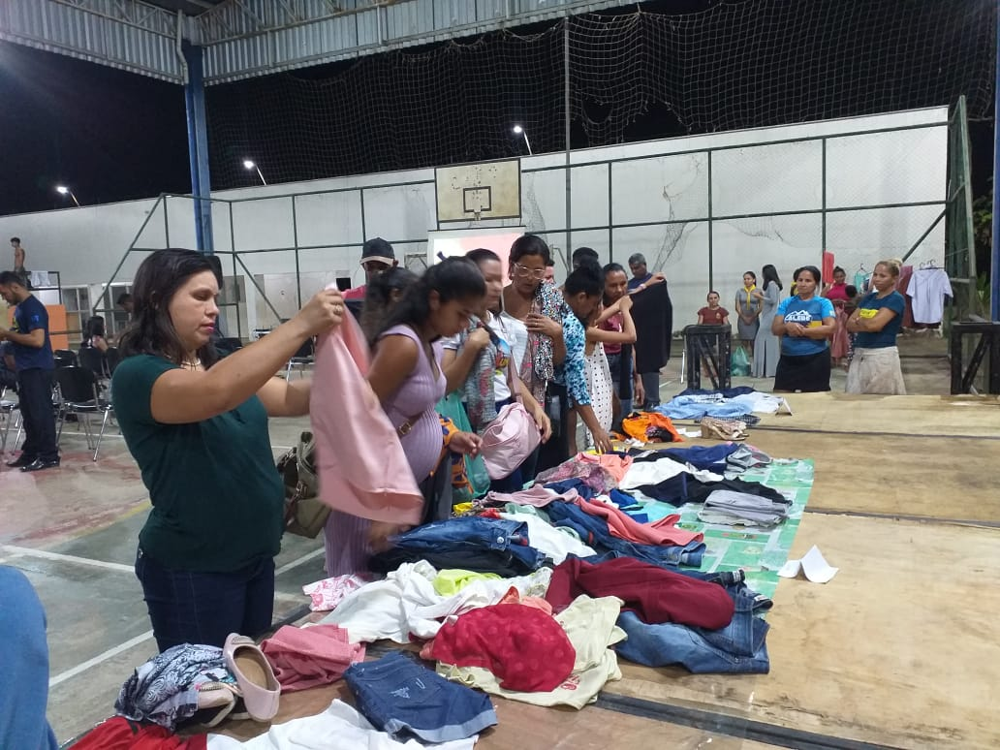

Calebe 2022 - Ministério Jasm

O Projeto Missão Calebe é um programa voluntário, serviço social e testemunho que desafia os jovens adventistas a dedicarem suas férias ao evangelismo em lugares onde não há presença adventista, para fortalecer as congregações pequenas e conquistar novas pessoas para o reino de Deus.
Nosso objetivo é mobilizar milhares de jovens em toda a América do Sul, desafiando-os a dedicarem parte de suas férias para fazerem evangelismo em lugares onde não há presença adventista. Ele se tornou o maior movimento de jovens dos últimos tempos. Não há dúvidas de que o programa é a estratégia de Deus para integrar a juventude no evangelismo. Portanto, urge que juntos, igreja e líderes, nos concentremos em conduzir os jovens nessa direção para que possam viver e experimentar o verdadeiro compromisso com Deus, com sua igreja e com a comunidade, ou seja, viver a “Salvação e o Serviço”. Que Deus possa utilizá-lo na grande tarefa de preparar e motivar os jovens para se encontrarem com Jesus. Deixe sua marca!
O Ministério Jasm realizou o Calebe no auditorio da praça do bairro Santa Mônica e na quadra espotiva da praça.


No final da programção os menbros da igreja organizarão um bazar. Durante o Calebe os visitantes ganhavam dinheiro do calebe e com esse dinheiro eles puderam comprar as peças durante o bazar.
